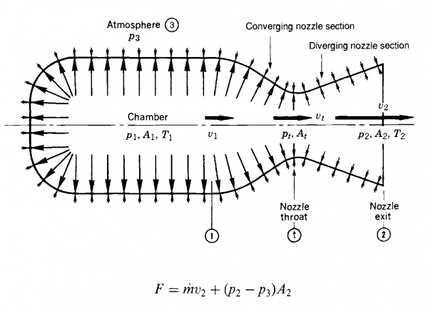

Rocket nozzle equations - Throat area
As a rocketry enthusiast, I find it fascinating how rocket engine nozzles work. A while back, I got my hands on a copy of Rocket Propulsion Elements, an in-depth technical book that goes over the ins and outs of rocket propulsion! Chapter 3 focuses on how a nozzle converts the high-pressure low-velocity combustion gases, into a low-pressure fast stream of gas. The fast stream of gases leaving the nozzle is what generates thrust, according to Newton's third law: for every acting force, there is an opposite force of equal magnitude acting in the opposite direction.
The following picture (courtesy of Rocket Propulsion Elements) shows how the pressure and velocity changes along the nozzle. I will use the same nomenclature in my functions bellow i.e. chamber pressure is $p_1$, velocity at the throat is $v_t$ and so on.
After reading this chapter a few times, I decided to validate my knowledge with some real world example, I chose the mighty Rocketdyne F1 engine:
| Chamber pressure | 6.8 MPa |
| RP1 Flow rate | 1789 kg/s |
| LOX | 788 kg/s |
| Combustion temperature | 3670 K |
| Specific heat | 1.24 |
| Molecular mass exhaust gases | 23.3 g/mol |
Armed with this information, I wanted to figure out the area of the throat $A_t$.
$A_t = \frac{\dot{m} V_t}{v_t}$
From the table above, we know that $\mathbf{\dot{m} = 2577 kg/s}$. We need to figure out the specific volume $V_t$ and gas velocity $v_t$. Let’s start by figuring out the velocity at the throat:
$v_t = \sqrt{KRT_t}$
$R= \frac{{R}‘}{\mathfrak{M}} = \frac{8.31}{0.023}=\mathbf{361.3}$
${R}‘$ is the ideal gas constant ($8.31$). $\mathfrak{M}$ is the molecular mass of the exhaust gases ($\mathbf{\mathfrak{M} = 0.023\text{ kg/mol}}$).
$T_t=\frac{2T_1}{K+1}=\frac{2\cdot3670}{1.24+1}=\mathbf{3276.8\text{ K}}$
$v_t = \sqrt{1.24\cdot361.3\cdot3276.8}=\mathbf{1211.6\text{ m/s}}$
Now, lets find the specific volume:
$V_t = V_1\left(\frac{p_1}{p_t}\right)^\frac{1}{K}$
$V_1=\frac{RT_1}{p_1}=\frac{361.3\cdot3670}{6771000}=\mathbf{0.19 m^{3}/kg}$
$\frac{p_t}{p_1}=\left(\frac{2}{K+1}\right)^\frac{K}{K-1} \Rightarrow p_t=\left(\frac{2}{K+1}\right)^\frac{K}{K-1}p_t=\left(\frac{2}{1.24+1}\right)^\frac{1.24}{1.24-1}\cdot6.8=\mathbf{3.78\text{ MPa}}$
$V_t = 0.19\cdot\left(\frac{6.8}{3.78}\right)^\frac{1}{1.24}=\mathbf{0.3 m^{3}/kg}$
And finally we can solve for $A_t$:
$A_t = \frac{2577\cdot0.3}{1211.6}=\mathbf{0.63m^2}$
To verify this result we can look at the data availiable for the F1. $\frac{A_2}{A_t}=16$ and $D_2=3.47\text{m}$. We can solve the exit area as: $A_2=\Pi{r}^2=\Pi\cdot{1.73}^2=9.45m^2$. And finally, $A_t = \frac{A_2}{16}=\mathbf{0.59m^2}$
Conclusion
I’m really happy with the results, even if its not the exact value from the refence, is within 0.04 units! I would say that this difference comes from the number of decimals used in my math and also the uncertainty of some of the characteristics, as sources show different values.
References
http://www.astronautix.com/l/loxkerosene.html
https://link.springer.com/chapter/10.1007%2F978-0-387-09630-8_4